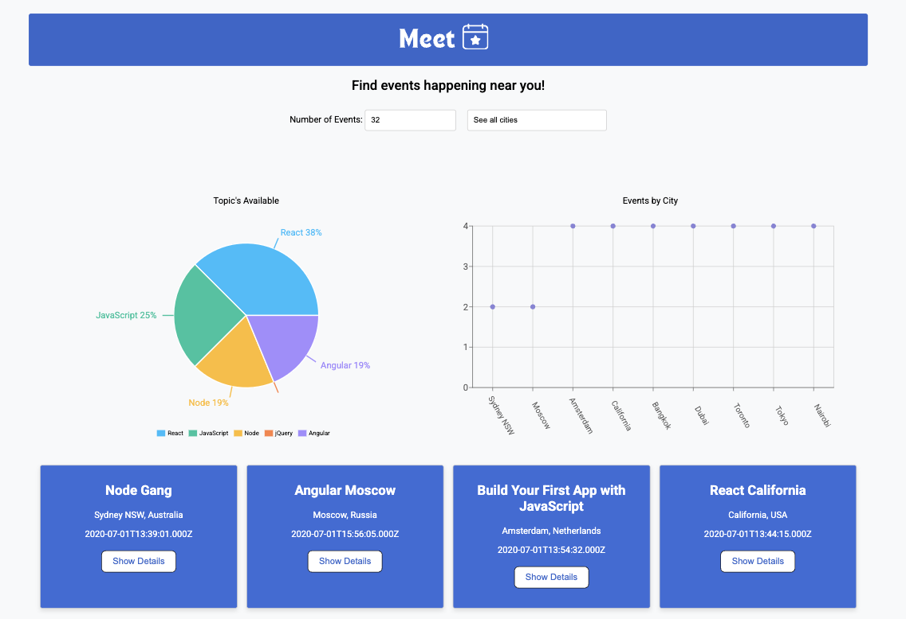

Meet App Project
A serverless Progressive Web App (PWA) built with React using test-driven development to help users find and discover local events.
Project Overview
The Meet App is a serverless Progressive Web Application built with React using a test-driven development approach. It integrates with the Google Calendar API to provide users with a seamless way to discover and manage local events. The app demonstrates advanced React concepts, serverless architecture, and modern web development best practices.
Goal / Purpose
The primary goal was to build a comprehensive PWA using test-driven development while learning serverless architecture and advanced React patterns. The project emphasized creating a robust, scalable application with proper testing coverage and offline capabilities.
Challenges & Solutions
Challenge: Implementing serverless architecture and managing complex API integrations with proper error handling.
Solution: Built AWS Lambda functions for authentication and API calls, implemented comprehensive error handling and fallback mechanisms.
Lessons Learned
This project deepened my understanding of test-driven development, serverless architecture, and Progressive Web App principles. I gained valuable experience with AWS services, advanced React patterns, and creating applications that work seamlessly both online and offline.
Future Improvements
- Add social sharing features for events
- Implement user authentication and personalized recommendations
- Expand data visualization with more chart types
- Add event creation and management capabilities